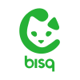

Buy Bitcoin
Most exchanges work like this: you send money, they show you a balance on a screen. But that balance is not bitcoin. It is a number in their database. They hold the private keys, which means they control your access. They can freeze your account, limit withdrawals, or lend your coins to someone else behind the scenes. Every service on this page is Bitcoin-only, but they differ in one important way: who holds the keys after you buy.
Non-custodial services send bitcoin straight to your own wallet. You give them an address, they send sats. No balance on their servers, no trust needed after the transaction settles. Custodial exchanges hold your bitcoin until you withdraw it. Until you move it off the platform, you own a promise, not bitcoin. That difference matters more than most people realize.
The other big factor is identity verification. KYC (Know Your Customer) exchanges require government ID before you can buy. Peer-to-peer platforms let you trade with other people, often with little or no identity requirements. KYC exchanges tend to have better prices and faster execution. But every piece of data you hand over becomes a permanent record tied to your bitcoin activity. There is no undoing that.
You can compare the services below on what matters most: fees, custody model, DCA support, Lightning withdrawal, and geographic availability. Select any two and tap Compare to see them side-by-side. If you are new to Bitcoin, start with what Bitcoin actually is before choosing where to buy.
KYC
No-KYC (Peer 2 Peer)

Frequently asked questions
What is the cheapest way to buy bitcoin?
Fees depend on the service and how you pay. Bank transfers are almost always cheaper than card payments because cards carry processor fees that get passed to you. Among KYC exchanges, Strike and River charge some of the lowest fees, often under 1%. On no-KYC peer-to-peer platforms like Bisq, maker fees are low but sellers set their own prices, which usually include a premium above market rate. The cheapest option depends on your country, payment method, and whether you are willing to provide identity documents. You can compare fees across services using the tool above.
Can I buy bitcoin without providing my identity?
Yes. Peer-to-peer platforms like Bisq, HodlHodl, Peach, and RoboSats let you trade with other people without KYC verification. You negotiate with them instead of going through a company. Liquidity tends to be lower and you will usually pay a premium above the spot price. But the bitcoin you receive is not tied to your identity in a corporate database. In a system where data is permanent, that privacy has real value.
What is dollar-cost averaging and which services support it?
Dollar-cost averaging means buying a fixed amount of bitcoin on a regular schedule, whether weekly, biweekly, or monthly, regardless of the price. It removes the emotional cycle of trying to time the market, watching the price run, then buying the top out of panic. Over time, your purchases average out across highs and lows. Services like River, Swan, Relai, and Bull Bitcoin all support automatic DCA. The important next step is setting up auto-withdrawal to your own wallet. DCA builds the habit. Self-custody is what makes it sovereign.
What's the difference between custodial and non-custodial?
A custodial exchange holds your bitcoin on their servers. You see a balance on a screen, but they control the private keys. That means they decide whether you can withdraw, when, and how much. A non-custodial service sends bitcoin to your wallet after purchase. You hold the keys from the start, which means no one else can freeze, seize, or lend out your coins. Every exchange failure in Bitcoin's history, from Mt. Gox to FTX to Celsius, happened to people who thought they owned bitcoin but actually owned promises. Self-custody removes that risk entirely.
Which exchanges send bitcoin directly to my wallet?
Bull Bitcoin, Relai, and Pocket are non-custodial. They require your wallet address and send bitcoin straight to it. Peer-to-peer platforms also settle to your address. If you use a custodial exchange, you can still move to self-custody by withdrawing after each purchase. The point is not to leave bitcoin on someone else's platform longer than necessary. Once it is in your own wallet, it is yours. No counterparty risk, no promises.
Should I buy bitcoin now?
Buoy is a comparison tool, not a financial advisor. But here is a way to think about it: most people who try to pick the right moment end up watching from the sidelines. Dollar-cost averaging exists for this reason. It removes the timing question entirely. You commit to a regular amount and let time do the work. Whether that is the right choice for you depends on your situation, but the mechanism itself is designed to take the anxiety out of "when." You can explore services that support DCA using the compare tool above.